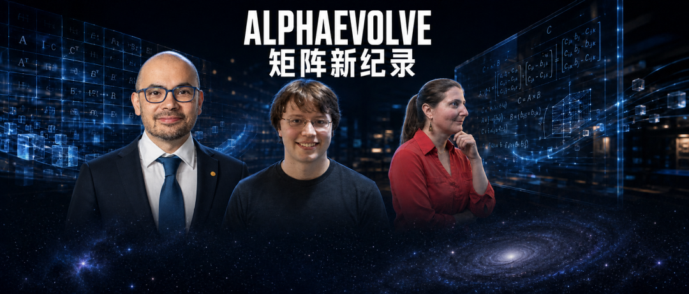

新智元报道
新智元报道

AlphaEvolve再次刷新记录！
谷歌云首席科学家、DeepMind副总裁Pushmeet Kohli官宣：
矩阵乘法的最快理论速度再次被刷新！
矩阵乘法是现代计算的「暗物质」——它驱动着从图形渲染到大规模神经网络训练的一切，却至今无人真正知道它的理论最快速度。
这个速度由指数ω定义：把两个n×n矩阵相乘的渐近复杂度是 O(n^ω)。
教科书算法给出ω=3，1969年德国数学家Volker Strassen把它降到约2.807。
此后半个多世纪，逐渐把上界一点点推到 2.371339。
现在，Google DeepMind与Alman、Vassilevska Williams等理论计算机科学家联手，借助Gemini驱动的编码智能体AlphaEvolve，把这个上界刷新到ω < 2.371177。
改进幅度仅约1.62×10⁻⁴，「与过去40年的多数进步相当」。
这是AI第一次以实质性方式介入了理论计算机科学最经典、最顽固的开放问题之一。
标题：Improving the matrix multiplication exponent with modern optimization and AlphaEvolve
传送门：https://arxiv.org/abs/2608.16884v1

这次进步没有发明全新的数学框架。
它做的事情更微妙，把现有框架的「优化核心」推到了前所未有的规模。
第一板斧是重构。
组合损失分析（combination loss analysis）是激光法的精炼版本，核心是一个非凸优化问题。
此前最好的结果只能处理递归层级ℓ*=3，大约2.5万个参数。
研究团队重新形式化了这个问题，让它支持ℓ*=4，参数规模直接跳到约700万。
他们用张量表示、幽灵节点和分阶段并行，把原本难以扩展的计算，变成了可以在 GPU 上高效求解的问题。
第二板斧是机器学习设计的优化器。
他们用梯度下降（Adam）、Softmax 参数化、Sinkhorn-Knopp算法计算最大熵，再配合隐式微分，直接在这个 700 万参数的非凸空间里搜索。仅这一步，就把上界改进了约 0.97×10⁻⁴。
第三板斧，也是最引人注目的一刀，是把优化器本身交给 AlphaEvolve 进化。
AlphaEvolve在约700万参数规模上精炼程序，单GPU大约 5 小时跑出结果，再额外贡献了约 0.63×10⁻⁴ 的改进。最终，ω < 2.371177。
这就像人类先设计出一座巨大的迷宫，然后让 AI 既学会在迷宫里找路，又学会改造迷宫本身的结构。
如果优化能力本身成为瓶颈，那我们过去「必须靠全新数学思想才能突破」的判断，是否需要重新校准？
更值得注意的，是作者名单。
DeepMind 的团队与前纪录保持者Josh Alman、Virginia Vassilevska Williams共同署名。
这不是「AI单独发现了什么}，而是一场清晰的人机分工：
人类提出框架、划定问题边界、设计验证路径；
AI负责在巨大的搜索空间中，以前所未有的效率探索并进化解决方案。
AlphaEvolve没有发明新的激光法。它只是把现有方法推到了极限。
真正的创造性框架，依然由人类提出。
这或许才是最冷静、也最重要的洞察：
AI不是替代数学家，而是成为数学家最强大的「实验助手」。它能在人类划定的疆域里，以过去难以想象的速度推进边界。
更大的跃迁（真正接近 ω=2）仍需要人类提出全新思想。但推动现有方法逼近天花板的过程，已经不可逆地变成了 AI 的主场。
这或许才是 2026 年这个微小数字最深远的含义。
参考资料：
编辑：大卫